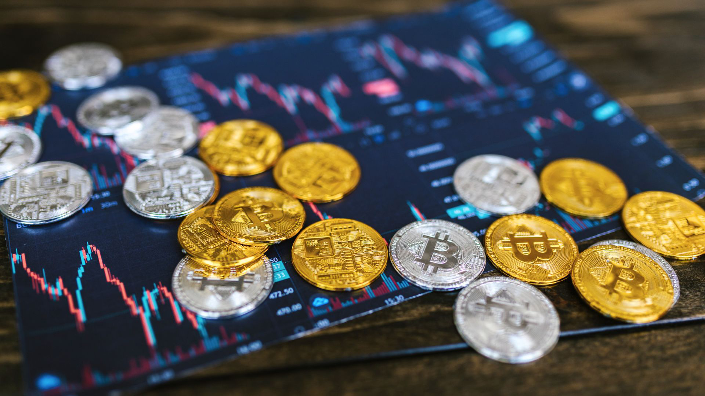

Article Title
Learn how to not or how to into the build a strong foundation in Web3, crypto, and security esential.
5 min read

An initial DEX offering (IDO) is a fundraising method for blockchain-based projects through decentralized exchanges (DEXs). Unlike initial coin offerings (ICOs) and initial exchange offerings (IEOs), IDOs offer a more secure, transparent, and community-driven approach to receiving funding.
An initial DEX offering (IDO) is a fundraising method for blockchain-based projects through decentralized exchanges (DEXs). Unlike initial coin offerings (ICOs) and initial exchange offerings (IEOs), IDOs offer a more secure, transparent, and community-driven approach to receiving funding.
In an IDO, fundraising begins with the creation of a liquidity pool where a project's token is paired with a major cryptocurrency, such as USDT, ETH, or even BNB. This pool allows investors to instantly trade the new token as soon as the IDO goes live, ensuring immediate liquidity.
An initial DEX offering (IDO) is a fundraising method for blockchain-based projects through decentralized exchanges (DEXs). Unlike initial coin offerings (ICOs) and initial exchange offerings (IEOs), IDOs offer a more secure, transparent, and community-driven approach to receiving funding.
However, IDOs come with certain risks. Their decentralized and permissionless nature increases the risk of scams or technical exploits of smart contracts. To avoid these potential pitfalls, participants must do thorough research before investing in an IDO.exchanges (DEXs). Unlike initial coin offerings (ICOs) and initial exchangeofferings (IEOs), IDOs offer a more secure, transparent, & community-driven approach to receiving funding.
One of the primary benefits of IDOs is the provision of instant liquidity. Investors can trade tokens immediately after launch without waiting for a listing on a centralized exchange. This allows for faster access to tokens and the ability to respond quickly to early market movements, potentially maximizing investment opportunities.